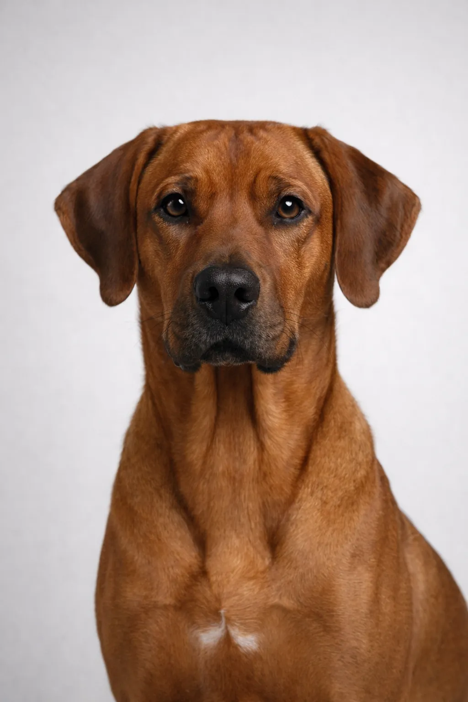

Rhodesian Ridgeback
En klassisk støver med skarpe instinkter og en mild, kjærlig, verdig natur.
24-27 in
70-90 lbs
Rasevurderinger
Temperament
Oversikt
Rhodesian Ridgeback er verdige, atletiske hunder kjent for den karakteristiske kammen av hår langs ryggen. De ble avlet for å jakte løver i Afrika.
Temperament
Rhodesian Ridgeback er kjent for å være kjærlig, verdig og balansert. De er utmerkede med barn og gjør fantastiske familiehunder. Tidlig sosialisering hjelper dem til å bli allsidige følgesvenner.
Helse
Generelt frisk med en levetid på 10-12 år. Vanlige helseproblemer inkluderer hofteleddsdysplasi og oppblåsthet. Regelmessige veterinærundersøkelser og forebyggende stell er viktig. Å opprettholde en sunn vekt bidrar til å forebygge mange helseproblemer.
Mosjon
Høyenergirase som krever kraftig daglig mosjon – minst en time med aktivitet. De trives med aktive familier som liker friluftsliv. Mental stimulering gjennom trening og aktivitetsleker er like viktig. Uten tilstrekkelig mosjon kan de utvikle atferdsproblemer.
⦿ Passer Denne Rasen for Deg?
✓ Passer best for
- Erfarne hundeeiere
- Aktive familier
- De som ønsker en verdig beskytter
- Hus med hage
- Selvsikre hundeeiere
✗ Ikke Ideelt For
- Førstegangseiere
- Leilighetsbeboere
- Engstelige eiere
- De som ønsker en svært sosial hund
Vår Vurdering: Verdige, lojale atleter som trenger erfaren håndtering. Ridgebacks er hengivne overfor familien, men reserverte overfor fremmede. Best for selvsikre eiere som kan gi ledelse og mosjon.